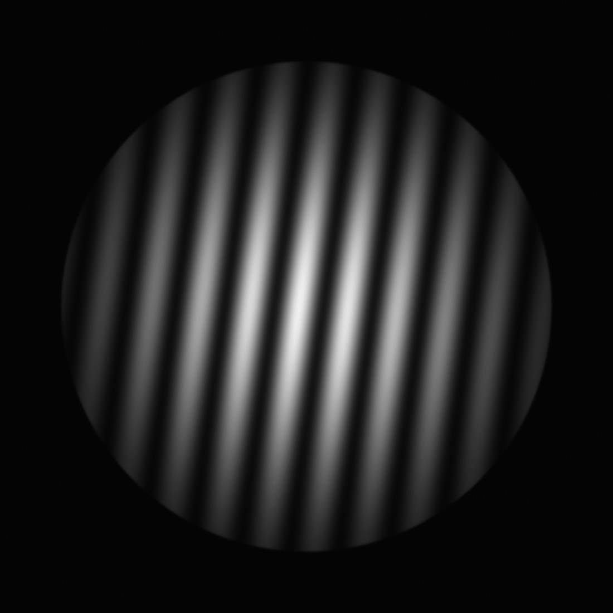
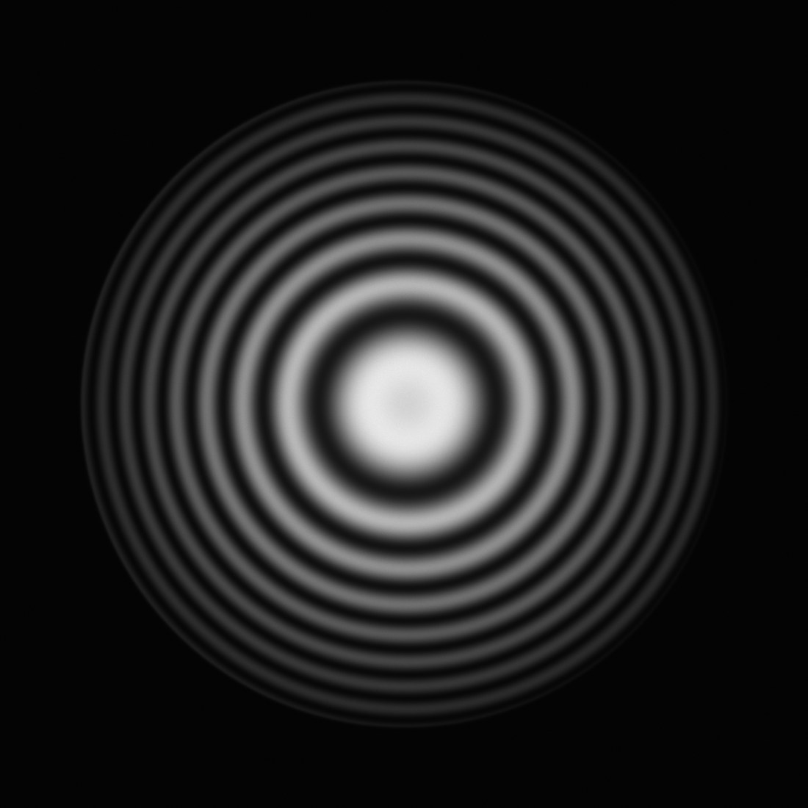
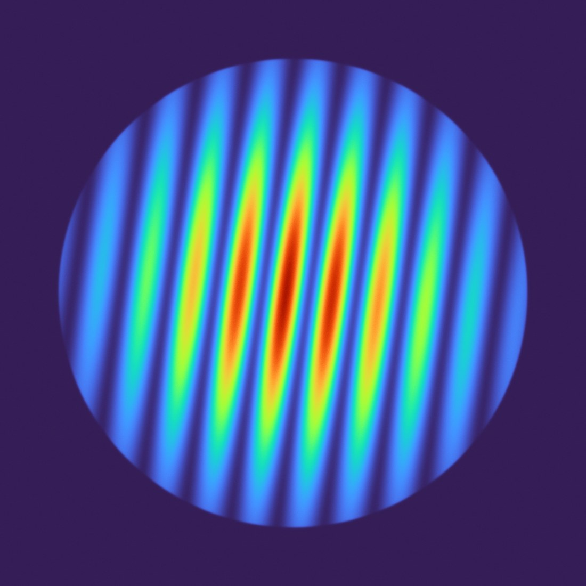
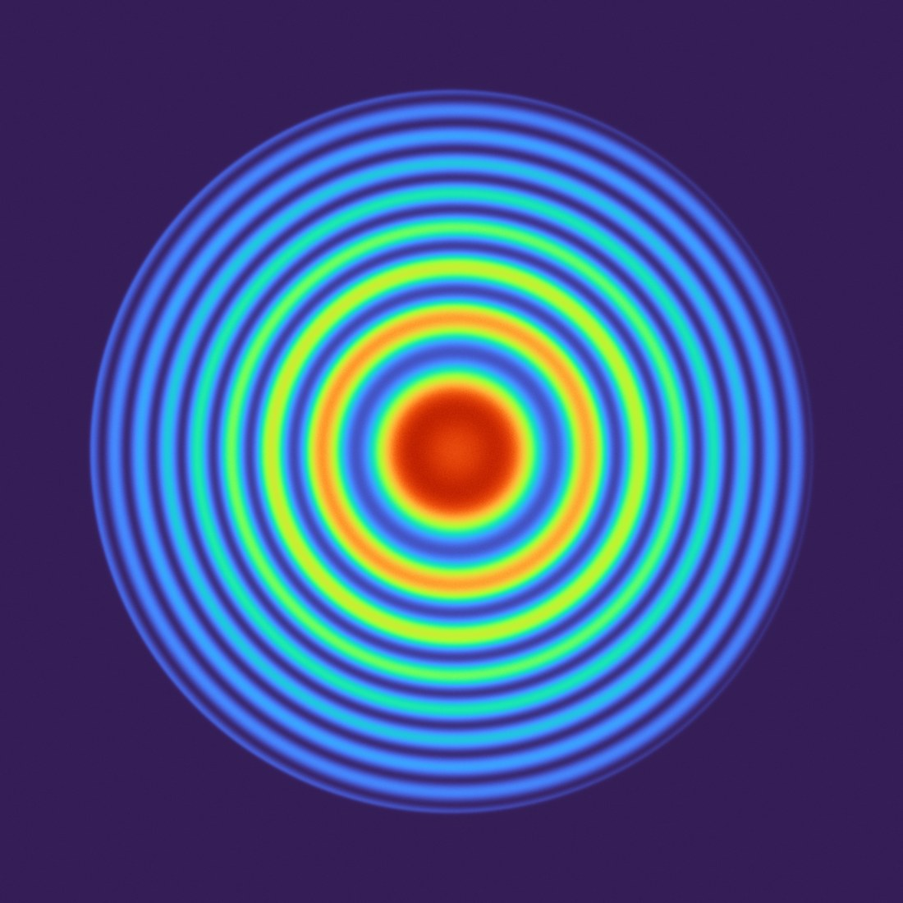
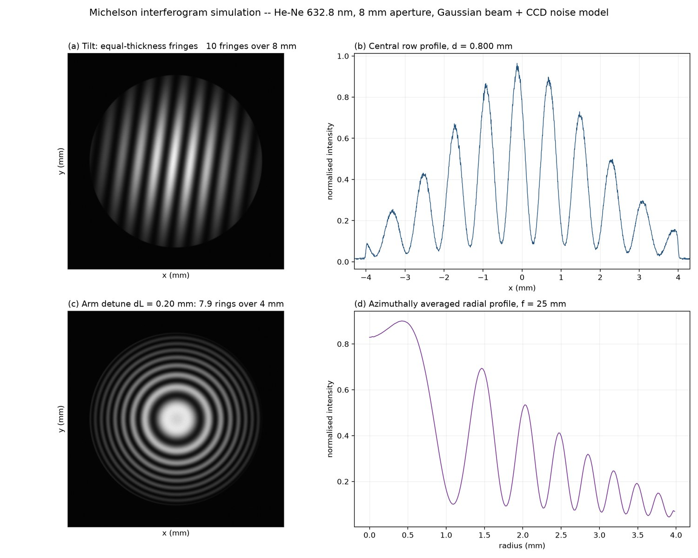

This report closes the loop from specification to executable model for a Michelson interferometer used as a wavefront-metrology instrument: 632.8 nm He–Ne source, 8 mm clear aperture, a reference arm fixed and a test arm travelling ±0.2 mm, with targets of λ/20 RMS wavefront and interferometric visibility above 0.8. Two tracks run in parallel. The physical track (Python / NumPy) synthesises CCD-realistic interferograms from first principles — Gaussian envelope, soft-edged stop, Poisson shot noise, read noise and 8-bit quantisation — so that every fringe pattern in this document is a computed result rather than an illustration. The engineering track specifies how the same instrument is built and diagnosed in Zemax OpticStudio: sequential ray tracing of each arm for exit-pupil OPD, a merit function built on the difference between the two arms' Zernike coefficients, and a non-sequential coherent-irradiance detector for the real fringe field.
本报告针对一台用于波前计量的迈克尔逊干涉仪，给出从指标到可执行模型的完整闭环：He–Ne 632.8 nm 光源、 8 mm 通光口径、参考臂固定而测试臂可位移 ±0.2 mm，指标为波前 RMS < λ/20、条纹对比度 > 0.8。 全文双线并行：物理仿真线用 Python 从第一性原理生成具备 CCD 真实感的干涉图（高斯包络、软边光阑、 泊松散粒噪声、读出噪声、8 bit 量化），文中每一张条纹图都是计算结果而非示意图；工程实施线给出 该仪器在 Zemax OpticStudio 中的建模、优化与排查路径——序列模式分臂提取出瞳 OPD，评价函数以两臂 Zernike 系数之差为目标，非序列模式用相干辐照度探测器还原真实条纹场。
所有结论均标注依据：几何光路、光程差、相干长度、偏振与膜层、探测器采样。凡涉及 Zemax 菜单名、 操作数或版本相关功能，均提示需按实际版本确认。
本报告基于无 Zemax 授权的环境完成。所有干涉条纹图、强度剖面与对比度数据，均由 Python（NumPy / Matplotlib）按公开光学原理进行真实物理仿真生成，可直接复现、可校验；Zemax 相关章节为工程理论指导， 基于公开的建模范式与操作逻辑撰写，不包含任何实际软件运行截图、导出数据或优化结果。文中提及的 菜单路径、操作数名称与探测器设置项，可能随 OpticStudio 版本及授权等级不同而变化，实施时需按你的版本确认。 This report was produced in an environment without a Zemax license. Every interferogram, intensity profile and visibility value is a genuine physical simulation computed in Python and is fully reproducible; the Zemax chapters are engineering guidance derived from public modeling practice and contain no screenshots, exports or optimisation results from the software. Menu paths, operand names and detector settings must be verified against your OpticStudio version.
Design targets, the four equations that govern the fringe field, and the division of labour between sequential and non-sequential modeling. 指标、支配条纹场的四个公式，以及序列与非序列模式的分工边界。
| Parameter参数 | Value取值 | Engineering meaning工程含义 |
|---|---|---|
| Wavelength 波长 | 632.8 nm (He–Ne) | 单色、高相干；相干长度由纵模结构决定，见 §4.1 |
| Clear aperture 通光口径 | 8 mm | 决定可测区域与条纹数上限；高斯 1/e² 直径取 8 mm |
| Reference arm 参考臂 | fixed | 长度稳定，作为相位基准 |
| Test arm travel 测试臂行程 | ±0.2 mm | 对应 OPD 变化 ±0.4 mm ≈ ±632 个干涉级次，见 §4.2 |
| Wavefront error 波前误差 | RMS < λ/20 = 31.6 nm | 装调完成后两臂残余波前之差的上限（不含可扣除的倾斜/离焦） |
| Fringe visibility 条纹对比度 | V > 0.8 | 相干性、偏振、分束比、像差、探测器共同决定，见 §4.4 |
其中 |γ| 为复相干度（由光源谱宽、偏振态、臂长差共同决定），Γ = 2√(I₁I₂)/(I₁+I₂) 为分束比因子。 实际可观测的对比度是二者的乘积：V = |γ|·Γ。这就是后面 §4.4 对比度预算表的物理基础。
α 为两臂回光波前之间的夹角（镜像倾斜量的两倍，若镜面倾斜 β，则波前夹角为 2β）。条纹方向垂直于倾斜轴， 间距 d 与倾角成反比。本报告取 N = 10 条跨 8 mm → d = 0.80 mm → α = 395.5 µrad = 81.6″。
ΔL 为两臂光程差，f 为干涉仪后成像镜焦距，r 为探测器上的径向坐标。级次 m(r) 随 r 单调下降， 因此圆环向外侧变密（二阶导不为零）。当 ΔL → 0 时整场趋于同一级次，圆环扩张成一片单色视场—— 条纹对比度看似很好，但对相位完全不敏感，这是最容易被误判为"系统正常"的失效模式。
振镜扫描或臂长漂移使 OPD 增大时，对比度按指数衰减。对 OPD 预算而言，工程判据是 |OPD|max ≤ Lc/10，此时相干性引入的对比度损失小于 10%。
| Mode模式 | Produces能产出 | Does NOT produce不能产出 |
|---|---|---|
| Sequential 序列模式 |
逐臂的出瞳波前图、OPD Fan、Zernike 系数、近轴/实际光线追迹、优化变量与评价函数 | 不能直接生成完整干涉条纹；两条独立光路在同一 LDE 中不构成真实相干叠加 |
| Non-sequential 非序列 NSC |
完整物理光路、光线分裂、偏振追迹、相干辐照度探测器上的真实条纹场、鬼像与杂散光 | 不适合做高阶像差的解析优化；计算量大、对光线数与相干设置敏感 |
定量相位分析优先走 NSC；波前优化与公差反演优先走序列。两者不是替代关系，而是前后道工序。
Every image below is computed from Eq. (1)–(3) on a 2048² grid (4.88 µm/pixel) and then degraded by a detector model, so it behaves like a real CCD frame — including noise you cannot remove by averaging a single shot. 全部由公式计算后经探测器模型退化，具备真实 CCD 帧的行为。

为什么是直的：OPD 只沿一个方向线性变化（等厚线是平行直线），因此同一级次的轨迹就是垂直于倾斜轴的直线。 方向的意义：条纹的旋转角直接读出倾斜轴的方向——转动镜子绕 x 轴，条纹绕 y 轴排列，这是装调时"先定轴、再定角"的依据。 间距的意义：d = λ/(2α)，间距反比于倾角；把 0.8 mm 换成 164 像素，说明这套采样对倾角的灵敏度约为每像素 0.5″量级， 因此 81.6″ 的失调在图像上一目了然。

为什么是圆的：若光源为扩展源或存在发散角，OPD 只依赖观察角 i，等倾线是同心圆。 环数的意义：环数 = 2ΔL(1−cos imax)/λ，直接正比于 ΔL——因此数环即可粗测臂长差，这是最古老也最实用的自检手段。 危险区：当 ΔL 降到几十微米，环数降到 1～2 个，视场几乎单色；此时"条纹很干净"并不代表系统良好， 恰恰说明相位灵敏度已经丢失，必须先把 ΔL 偏置到几个环的工作点再测量。



| Metric指标 | Tilt case倾斜 | Detune case失配 | Target目标 |
|---|---|---|---|
| Fringe / ring count 条纹（环）数 | 10.0 | 7.94 | 由失调量决定，非指标 |
| Spacing 间距 | 0.800 mm | 0.256 mm @ edge | ≥ 6 px 以满足 Nyquist |
| PV OPD across aperture 孔径内 PV | 10.0 λ | 7.9 λ | 失调量，非设计残差 |
| Wavefront RMS 波前 RMS | 2.50 λ | 2.29 λ | < 0.05 λ（装调后） |
| Measured visibility 实测对比度 | 0.879 | 0.863 | > 0.80 ✔ |
注意：表中 RMS 由人为引入的失调主导（倾斜/失配属于可通过装调扣除的低阶项），与指标 λ/20 不矛盾。λ/20 约束的是 装调完成后剩余的高阶残差，其量级比这里小两个数量级。
# Python 3.13 · numpy 2.5 · matplotlib 3.11 python michelson_sim/michelson_fringe_sim.py # -> outputs/interferogram_tilt_gray.png 2048 x 2048, 8-bit # -> outputs/interferogram_rings_gray.png # -> outputs/interferogram_*_rainbow.png turbo colormap # -> outputs/fig_analysis_panel.png # -> outputs/metrics.json all numbers in this report
Order of operations matters: geometry first, then optical-path matching, then wavefront, and only then fringes, tolerance and stray light. 先几何重合，再光程匹配，再波前优化，最后做条纹、公差与杂散光。
两臂各自建一个文件（或用多重结构 CONF 隔离），保证每条光路都是"单向、单调"的序列光路， 这样出瞳波前才有明确的物理含义。单位统一 mm，波长表加 632.8 nm 并设为主波长。
| Surf | Type面型 | Material材料 | Radius曲率半径 | Thickness厚度 | Note说明 |
|---|---|---|---|---|---|
| OBJ | Standard | — | Infinity | Infinity | 无穷远物（准直入射） |
| 1 | Standard | — | Infinity | 10.0 | 孔径光阑，半口径 4 mm（Aperture = Entrance Pupil Diameter 8 mm） |
| 2 | Standard | BK7 (or air) | Infinity | 10.0 | 分束立方前表面；若用平板分束镜则倾斜 45° 建面 |
| 3 | Standard | BK7 | Infinity | Larm | 立方厚度 + 臂长；测试臂此层设为变量（±0.2 mm 扫描） |
| 4 | Standard | MIRROR | Infinity | — | 参考镜；测试臂替换为被测面（球面时 Radius 设变量 + TIRR） |
| 5 | Coordinate Break | — | — | 0 | 倾斜变量：Tilt About X / Y，用于模拟装调残余（单位度） |
关键点：把"装调误差"显式建成 Coordinate Break 的自由度，而不是事后手改数值——这样同一套模型既能做优化，也能直接做公差分析。
核心思想：不要试图在同一条光路里同时优化两个臂。正确做法是分别用相同的光瞳采样提取两臂的 Zernike 系数， 再对系数之差施约束。这样优化器不会被"两臂共同的低阶项"（可扣除项）带偏。
| Operand操作数 | Definition定义 | Target目标 | Role作用 |
|---|---|---|---|
ZERN | Zernike 系数（Term j，采样 ≥ 7 环） | — | 逐臂提取前 9 项（piston…primary astig/trefoil） |
DIFF | 两操作数之差（跨 CONF 或跨文件） | 0 | 核心项：约束 |ΔZj| → 0，权重 1 |
RSCE | RMS 波前差（相对于参考球面） | 0.05 λ | 把单臂残差压到 λ/20 以内 |
REAY | 像面/出瞳处光线高度 | 0 | 保证两臂回光在探测器上共心（几何重合先于相位） |
CONF | 多重结构（Configuration） | — | 同一文件内切换两臂，便于 DIFF 直接比较 |
Source Ray 或 Source Diode，单色 0.6328 µm，准直后口径 8 mm；必须为相干源（相干计算不接受随机相位光源）。COATING 50/50）→ 两臂反射镜 → 回程 → 出射；探测器前加 f = 25 mm 成像镜以复现 §2.3 的等倾环。NSC Editor → Ray Splitting 开启，Polarization 追迹开启，Minimum Relative Ray Intensity ≈ 1e-4；光线相位追迹必须打开，否则相干求和退化为强度叠加。Detector Rectangle，10 × 10 mm，≥ 512 × 512 像素，置于焦面附近；切换为相干辐照度模式（选项名称与位置随版本不同，需按你的版本确认）。Detector Viewer 的行/列剖面量对比度与间距。| Symptom现象 | Likely cause可能原因 | Check检查 | Fix修正 |
|---|---|---|---|
| 探测器上完全无条纹，只有均匀亮斑 | 相干求和未开启 / OPD 超出相干长度 / 两臂光斑未重合 | 查 NSC 光线相位开关；算 2ΔL 与 Lc；看非相干辐照度的光斑质心 | 开相位追迹；把 ΔL 拉回 Lc/10 内；用 REAY 先做几何重合 |
| 有条纹但对比度远低于 0.8 | 分束比失衡、偏振态正交、膜层相位不匹配 | 读每臂回光能量比；查偏振追迹后的 Jones 矢量 | 把膜层改为 50/50；在臂内加 λ/2 片或旋转偏振；检查镀膜相位差 |
| 条纹数对不上（应为 10 条却是 3 条） | 倾角单位错（度 vs 弧度）、镜像倾斜未乘 2 | 用 d = λ/(2α) 反算，与模型输入对照 | 统一单位；记住镜倾 β → 波前夹角 2β |
| 条纹边缘出现锯齿 / 摩尔纹 | 探测器像素不足（每条纹 < 4 px） | 条纹间距 ÷ 像元尺寸 | 加像素数或缩短成像镜焦距；本报告 0.8 mm / 4.88 µm = 164 px，安全 |
| 圆环中心一片均匀、数不出环 | ΔL 接近 0，相位灵敏度丢失 | 估 mcenter = 2ΔL/λ，若 < 5 则有风险 | 把 ΔL 偏置到 5～10 个环的工作点再测 |
| 序列模式波前很好，NSC 条纹却很差 | 序列未包含分束镜面形/膜层，NSC 引入了额外像差 | 对比两臂 Zernike 差值；查立方面形与胶层 | 在序列中加等效面形；或把立方作为已知误差项计入预算 |
Zemax OpticStudio 的 NSC 相干探测能力、Zernike 采样设置、多重结构跨 CONF 操作数，在 Standard / Professional / Premium 授权与不同版本之间存在差异：部分版本不提供相干辐照度探测器或偏振追迹选项。上表与 §3.3 的步骤 为通用建模范式，每一项都需在你的版本中确认可用性后再执行；若授权不支持相干探测，可用本报告的 Python 模型 替代条纹生成环节，序列模式仍可完成波前优化与公差分析。
The two numbers that decide whether this instrument works are the arm detune (0.2 mm) against the coherence length, and the fringe sampling against the detector. 决定成败的两个数：0.2 mm 行程与相干长度的比值， 以及条纹间距与像元尺寸的比值。
| Source光源 | Lc | V at OPD = 400 µm | Verdict结论 |
|---|---|---|---|
| 稳频 He–Ne（单纵模） | ≥ 300 mm | > 0.98 | 余量充足，首选 |
| 普通 He–Ne（多纵模） | ≈ 20 mm | ≈ 0.98 | 可用 |
| 单纵模 DPSS（532/1064 nm） | ≈ 100 mm+ | > 0.96 | 可用（需换波长重算 d 与级次） |
| 普通半导体激光器 | 1–10 mm | 0.90–0.67 | 风险：长行程端可能跌破 0.8 |
| LED / 宽谱 | ≈ 10 µm | ≈ 0 | 不可用（仅能看零级附近） |
V 按 V = exp(−OPD/Lc) 估算（高斯型谱近似），量级判断用，精确值需按实际谱线形状积分。
| Term误差项 | Budget预算 | Falls into计入 | Basis依据 |
|---|---|---|---|
| Mirror tilt 镜面倾斜 | ≤ 4″（残差） | 可扣除项（Zernike tilt） | 线性斜坡在圆孔径内 RMS = PV/4，PV = 2αD；4″ → PV 0.03 λ |
| Fringe carrier 载波条纹数 | 6–40 条 | 不占波前预算 | 每条纹 ≥ 6 px（Nyquist 余量）；本报告 10 条 = 164 px/条纹 |
| Arm detune 臂长失配 | 0.2 mm（工作点） | 对比度预算 | OPD 0.4 mm，需 ≤ Lc/10 |
| Defocus 离焦 | ≤ 0.15 λ RMS | 可扣除项（Zernike defocus） | 对应约 7.9 环，需在分析中扣除，否则浪费动态范围 |
| Beam-splitter ratio 分束比 | 50/50 ± 2% | 对比度预算 | Γ = 2√(I₁I₂)/(I₁+I₂) = 0.96 at 48/52 |
| Polarisation leakage 偏振泄漏 | ≤ 0.97 | 对比度预算 | 膜层相位差与应力双折射；正交分量直接降 V |
| Coating imbalance 膜层不对称 | ≤ 0.98 | 对比度预算 | 两臂反射相移不等价 → 等效 OPD 偏置 |
| Detector sampling 探测器采样 | ≥ 6 px/fringe | 相位精度 | 4.88 µm 像元下最多约 273 条跨 8 mm |
| Vibration / air 振动与气流 | < λ/10 抖动 | 随机误差（需平均） | 63 nm 光程抖动即吃掉 10% 对比度 |
这一级联解释了两件事：（1）为什么实测 0.879 仍算"健康"——它已经包含了 5 项独立损失，理论天花板本就不是 1.0； （2）为什么单纯"换更好的相机"救不了对比度——探测器项只占 2%，真正的短板在偏振与分束比。 降低对比度的每一环都应在预算表里有独立行，否则排查时无法定位。
| Risk风险 | Impact影响 | Likelihood概率 | Mitigation缓解 |
|---|---|---|---|
| ΔL 落在零附近，条纹"干净"但无相位信息 | 失效 | 中 | 强制工作点偏置 5～10 环；上电自检先数环 |
| 换用短相干光源后长行程端 V 跌破 0.8 | 高 | 中 | 光源与行程联合选型（§4.1 表）；行程末端实测 V |
| 分束立方面形/胶层引入不可扣除像差 | 高 | 中 | 序列模型加入等效面形；NSC 交叉验证；必要时改用平板分束镜 |
| 0.2 mm 行程内导轨直线度不足 → 条纹漂移 | 高 | 高 | 抖动预算 63 nm；闭环压电 + 参考干涉仪监测 |
| 探测器采样不足，边缘条纹混叠 | 中 | 低 | 条纹数上限 273 条；先算 px/fringe 再定焦距 |
| Zemax 版本不支持相干探测 | 中 | 中 | 用本报告 Python 模型替代；序列模式完成波前与公差 |